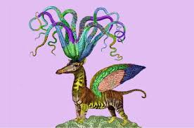

El Arte Visual y los Animales
El arte visual ha sido una herramienta poderosa para capturar la relación entre humanos y animales. Desde la pintura rupestre en la prehistoria hasta las representaciones modernas de fauna salvaje, el arte ha ayudado a los seres humanos a reflexionar sobre su conexión con otras especies. Pinturas, esculturas y fotografías han sido esenciales para concientizar sobre la preservación de los animales y su importancia en el ecosistema.

La Música y los Animales
La música también ha jugado un papel importante en la relación humano-animal. Compositores como Olivier Messiaen han creado obras inspiradas por el canto de los pájaros, mientras que otras culturas han utilizado sonidos de animales para promover la conexión espiritual. La música tiene el poder de sensibilizar a las personas sobre los derechos de los animales y de promover un sentido de empatía hacia ellos.

La Literatura y la Percepción Animal
La literatura ha sido una de las formas más profundas de explorar la mente humana y su relación con los animales. Desde fábulas clásicas como las de Esopo, hasta novelas modernas como "La llamada de lo salvaje" de Jack London, los animales en la literatura nos han enseñado sobre la naturaleza, la moralidad y el respeto por otras criaturas. A través de historias de animales, los humanos han podido explorar su propia humanidad.

El Cine y los Animales
El cine ha sido una poderosa forma de explorar la relación entre humanos y animales. Películas como "El Rey León" o "Bambi" han tocado profundamente las emociones de los espectadores, enseñándoles lecciones de vida y empatía hacia los animales. A través de los medios visuales, el cine ha sido fundamental para sensibilizar al público sobre la conservación de especies y el respeto por la fauna.